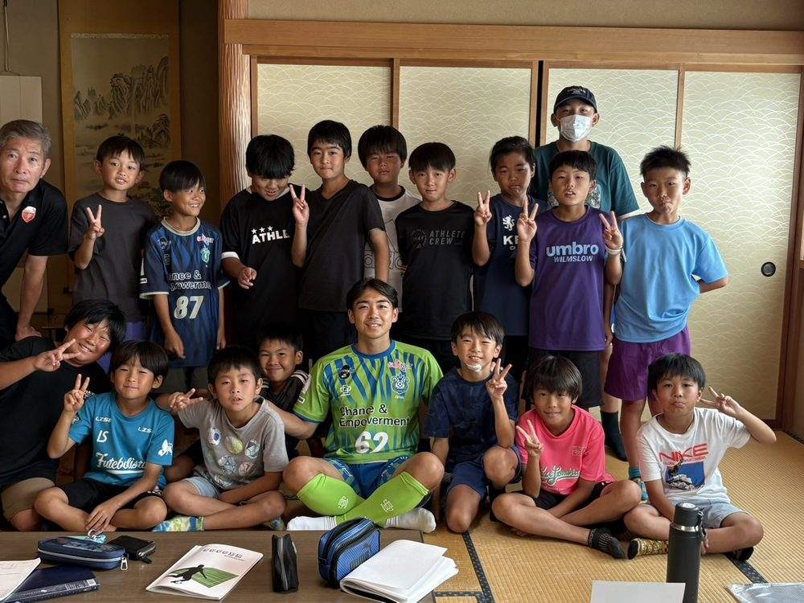
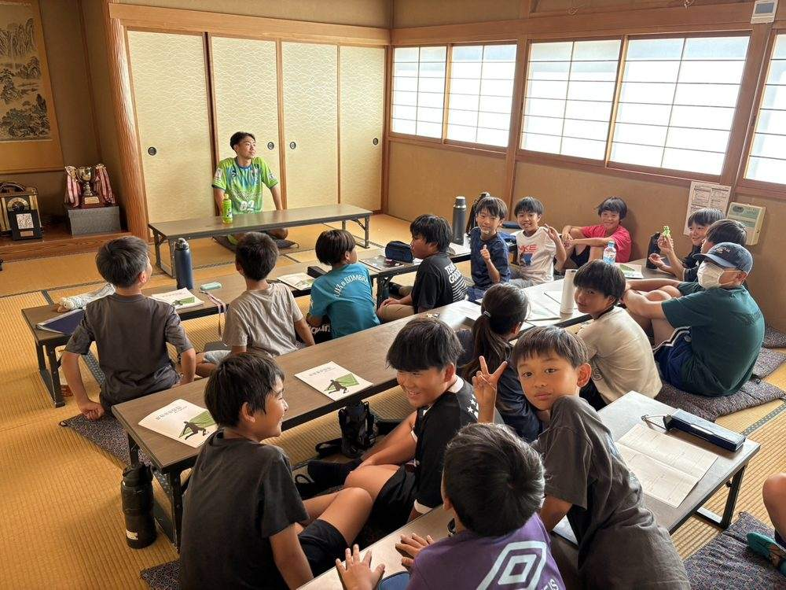
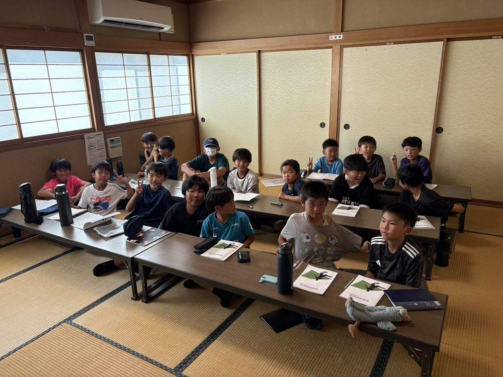
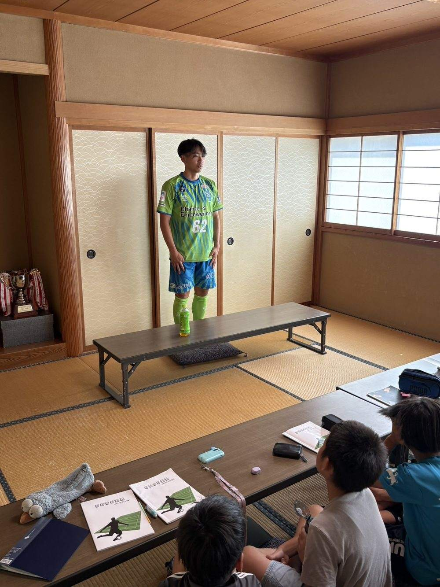
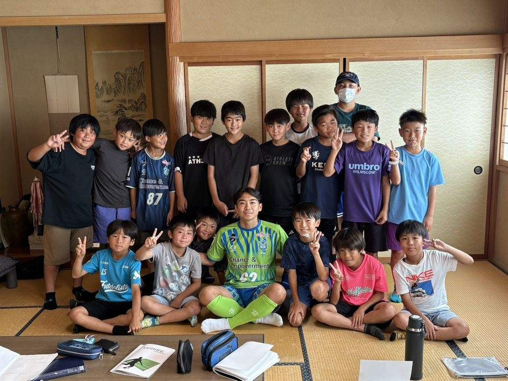
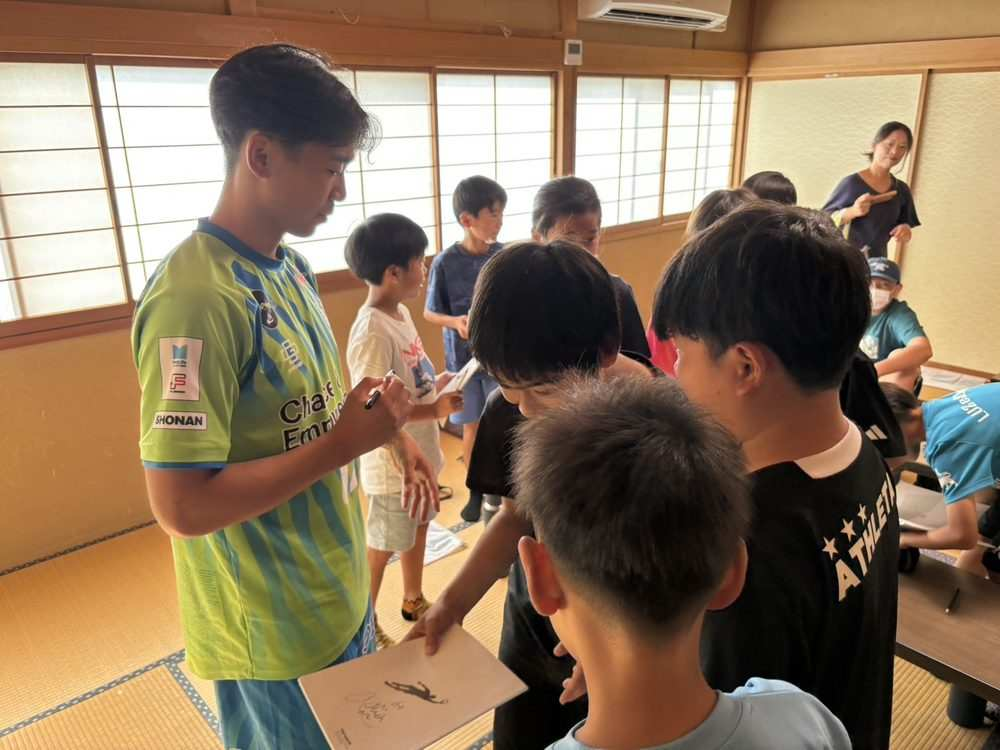
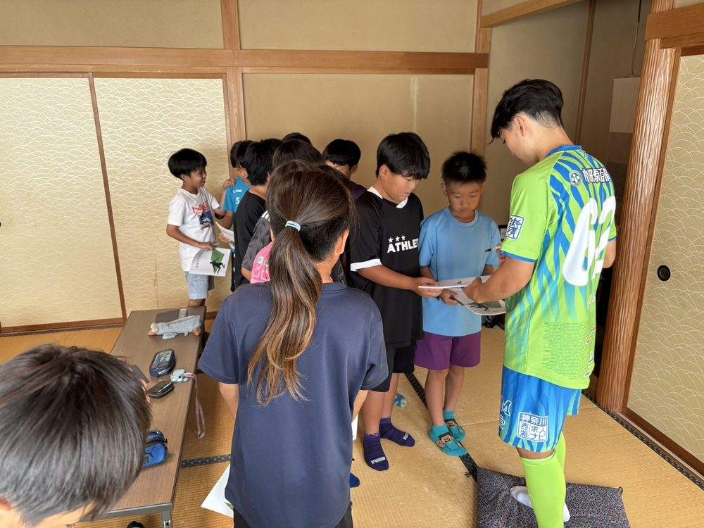
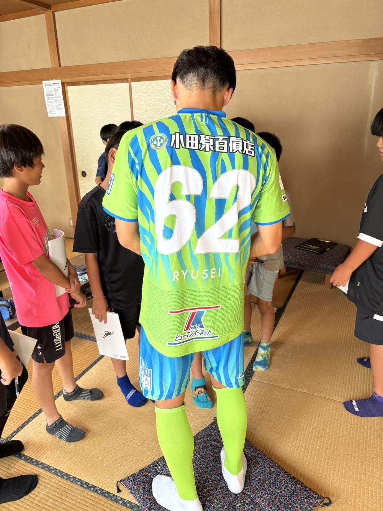

あいさつと感謝の気持ち
高校生で親元を離れ、知り合いのいない寮生活を送った経験。あいさつが人との繋がりを作ってくれたこと、人との会話やコミュニケーションの大切さを教えてくれました。
矢作SC卒団生でFリーガーの川崎竜聖選手をお迎えし、4・5・6年生を対象に特別講演を行いました。
夢に向かって努力することの大切さ、目標を実現するための考え方を、選手自身の経験を交えて語っていただきました。








写真をクリック（タップ）すると、大きく表示されます。
高校生で親元を離れ、知り合いのいない寮生活を送った経験。あいさつが人との繋がりを作ってくれたこと、人との会話やコミュニケーションの大切さを教えてくれました。
3年前、応援してくれていたお母様との別れを経験。天国のお母さんに喜んでもらいたいという想いが、あきらめかけたプロの夢を掴む力になったことを語ってくれました。
ボールとたくさん触れ合い「友達になる」こと。目標を持って練習に取り組むこと。物より、友達や仲間との触れ合いを大切にすること。
講演後は質問タイム。12個もの質問が飛び交い、あっという間の1時間でした。
川崎竜聖選手、貴重なお話をありがとうございました！矢作SCの子どもたちにとって、忘れられない一日になりました。